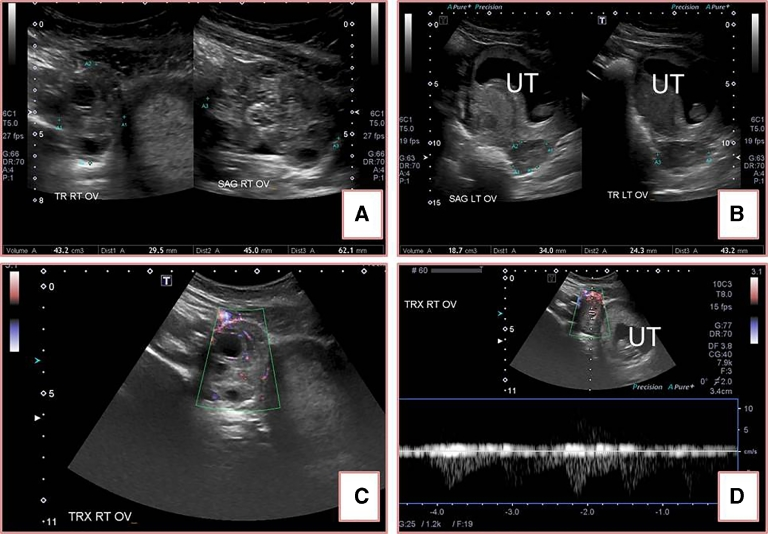
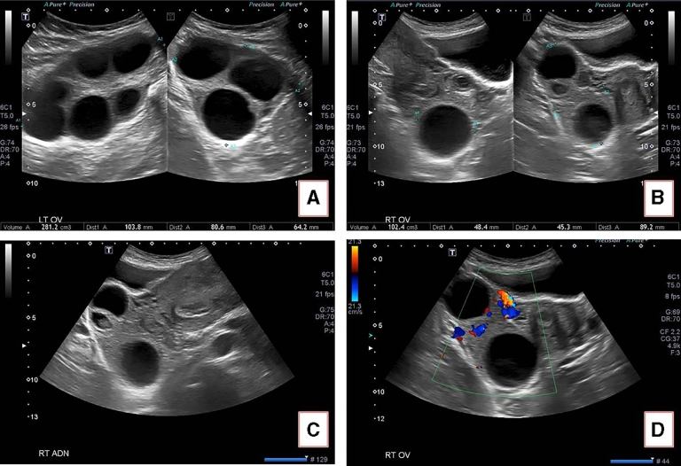
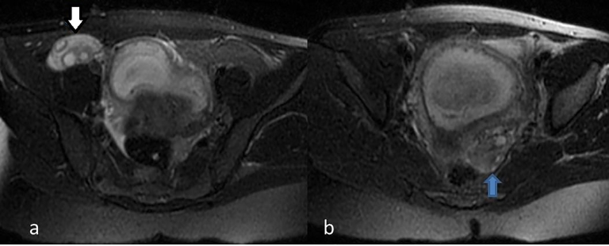

1742 — Xoắn buồng trứng trên buồng trứng quá kích (OHSS): buồng trứng to nhất chưa chắc đã xoắn, Doppler còn dòng không loại trừ
Tags: pattern:xoan-buong-trung pattern:buong-trung-da-nang pattern:dau-bung-cap pattern:doppler-binh-thuong pattern:dich-o-bung vung:buong-trung vung:phan-phu vung:tieu-khung protocol:TVUS-Doppler protocol:MRI-bung score:whirlpool
Mức chắc chắn (certainty): tổng hợp y văn (literature synthesis) — 2 ca nguyên văn có ảnh Doppler và MRI (Radiology Case Reports 2018, PMC6138859, CC BY-NC-ND) + 1 ca nguyên văn có dấu whirlpool (Radiology Case Reports 2023, PMC10369376, CC BY-NC-ND) dùng cho số liệu, không dùng ảnh. Đây là ca loạt nhỏ, không phải nghiên cứu đoàn hệ; các tỉ lệ dưới đây lấy đúng như bài nguồn trích dẫn.
Câu chốt: trên buồng trứng quá kích (OHSS), hai quy tắc thường dùng để chẩn đoán xoắn đều sai: (1) "buồng trứng to bất đối xứng là bên xoắn" — trong ca 2, bên to 281 cm³ thì bình thường, bên nhỏ hơn bị xoắn; (2) "còn dòng chảy là không xoắn" — ca 1 có cả dòng động mạch và tĩnh mạch trên Doppler nhưng vẫn xoắn. Chẩn đoán phải dựa vào dấu trực tiếp của cuống xoắn (whirlpool), vị trí buồng trứng bất thường, phù mô đệm T2 và diễn tiến lâm sàng, không dựa vào một dấu duy nhất.
1. Tổng quan bệnh học – cơ chế hình ảnh
1.1 Vì sao OHSS là "ổ" của xoắn buồng trứng
- OHSS làm tăng tính thấm mao mạch (VEGF) → thoát dịch vào khoang thứ ba → cổ trướng, cô đặc máu, buồng trứng to nhiều nang. Buồng trứng nặng, dài cuống và di động bất thường trong dịch cổ trướng — đúng điều kiện cơ học để xoắn quanh dây chằng chậu–buồng trứng và/hoặc dây chằng buồng trứng–tử cung.
- Dịch tễ (theo bài nguồn): xoắn buồng trứng chiếm 2,7% các cấp cứu ngoại khoa ở nữ; tới 80% xảy ra ở tuổi sinh sản; 1/5.000 thai kỳ; sau IVF 0,2–0,46%; tới 33% ở người có OHSS và đang mang thai (PMC6138859); bài ca whirlpool ghi tới 16% ở thai phụ có OHSS (PMC10369376). Hai con số khác nguồn — dùng khoảng 16–33% để không tuyệt đối hoá.
- Bên phải hay xoắn hơn do đại tràng sigma chiếm chỗ bên trái, hạn chế di động — nhưng không đủ để loại trừ bên trái (ca 2 xoắn bên phải dù buồng trứng trái to hơn nhiều).
1.2 TẠI SAO hình ảnh trông như vậy — vật lý + mô bệnh
| Dấu hiệu | Vì sao có | Hệ quả thực hành |
|---|---|---|
| Buồng trứng to, nhiều nang sát vỏ | OHSS: nhiều nang noãn + phù mô đệm → thể tích tăng; nang bị đẩy ra ngoại vi vì mô đệm phù ở trung tâm | "Chuỗi ngọc" nang ngoại vi không đặc hiệu — OHSS không xoắn cũng có |
| Phù mô đệm T2 tăng tín hiệu | Ứ dịch + phù tế bào do tắc tĩnh mạch–bạch mạch trước → nước tự do tăng → T2 sáng, T1 trung bình/thấp; không ngấm thuốc bất thường | Dấu sớm nhất trên MRI; đối xứng với bên lành giúp phát hiện |
| Doppler còn dòng động mạch | Buồng trứng có nguồn máu kép: động mạch buồng trứng (từ động mạch chủ bụng) + nhánh tử cung qua dây chằng buồng trứng–tử cung → tắc một nhánh không làm mất tín hiệu | Không được loại trừ xoắn khi còn dòng; dòng tĩnh mạch mất trước là dấu sớm hơn nhưng khó và không nhạy |
| Whirlpool sign | Cuống mạch xoắn nhiều vòng → trên siêu âm, mạch và mô cuống tạo xoáy ốc quanh trục | Dấu trực tiếp, giá trị dự báo dương > 90% (PMC10369376 dẫn Moro); đặc hiệu nhất trong các dấu siêu âm |
| Dịch tự do | Dịch thoát mạch (OHSS) + dịch tiết từ buồng trứng thiếu máu | Có ở cả hai bệnh cảnh → không phân biệt được một mình |
| Buồng trứng "xanh đen" khi mổ | Ứ máu + thiếu máu → màu sắc không dự báo khả năng sống: sau tháo xoắn, màu hồi phục nhanh | Không cắt buồng trứng chỉ vì màu; tháo xoắn rồi đánh giá lại |
- Ngưỡng định lượng của 2 ca nguồn:
| Đại lượng | Ca 1 | Ca 2 |
|---|---|---|
| Tuổi thai | 11 tuần 3 ngày | 9 tuần 3 ngày |
| Thể tích buồng trứng | phải 43,2 cm³ (xoắn) vs trái 18,7 cm³ | trái 281 cm³ (không xoắn) vs phải 102 cm³ (xoắn; chú thích hình ghi 10 cm³ — xem ghi chú) |
| Doppler | Có cả dòng động mạch và tĩnh mạch trong buồng trứng xoắn | Có dòng trong buồng trứng xoắn |
| Thời gian đau trước nhập viện | 12 giờ | 5 ngày, tăng dần |
| Xử trí | nội soi tháo xoắn, bảo tồn | nội soi tháo xoắn, bảo tồn |
Ghi chú trung thực nguồn: ở ca 2, phần ca bệnh ghi buồng trứng phải 102 cm³, còn chú thích Figure 4 ghi 10 cm³. Đây là lỗi biên tập của bài gốc (đã kiểm lại toàn văn PMC6138859); kết luận không đổi: bên bị xoắn là bên nhỏ hơn nhiều so với bên 281 cm³.
2. Mẫu hình + chẩn đoán phân biệt theo mẫu hình (gamut)
Đọc theo cái nhìn đầu tiên trên siêu âm đầu dò âm đạo:
- A. Buồng trứng to + cuống xoáy ốc (whirlpool) ± nang ngoại vi: xoắn buồng trứng — chẩn đoán gần như chắc, mổ nội soi.
- B. Buồng trứng to hai bên nhiều nang + cổ trướng + không whirlpool: OHSS đơn thuần — điều trị nội khoa; nhưng không loại trừ xoắn ngắt quãng.
- C. Buồng trứng to một bên + phù mô đệm + vị trí bất thường (giữa tử cung và bàng quang): xoắn — dấu vị trí quan trọng hơn kích thước trong OHSS.
- D. Buồng trứng to + Doppler mất dòng tĩnh mạch, còn động mạch: xoắn sớm — ưu tiên mổ; nhưng còn cả hai dòng vẫn không loại trừ.
- E. Đau hố chậu + sốt + dịch ổ bụng: áp-xe phần phụ / viêm phần phụ — kháng sinh, dẫn lưu; không mổ tháo xoắn.
- F. Đau + dịch + βhCG dương + không thấy túi thai trong tử cung: thai ngoài tử cung — chẩn đoán bằng βhCG + siêu âm, không phải bằng Doppler buồng trứng.
- G. Đau bụng quanh rốn/di lệch + sốt + bạch cầu: viêm ruột thừa — đặc biệt khi buồng trứng bình thường nhưng không thấy ruột thừa.
3. Bảng so sánh phân biệt (ma trận đối chiếu)
| Thực thể (entity) | Hình ảnh điển hình | Chốt vào (rule-in) | Chốt loại (rule-out) | Gợi ý xác nhận |
|---|---|---|---|---|
| Xoắn buồng trứng trên OHSS | Buồng trứng to, nhiều nang, phù mô đệm T2, vị trí bất thường; whirlpool ở cuống; Doppler có thể còn dòng | Whirlpool sign + đau cấp + buồng trứng to bất thường vị trí | Whirlpool âm + không đau + không phù mô đệm mới tạm loại; Doppler bình thường KHÔNG loại | Siêu âm lặp 2–4 giờ; MRI T2 FS; nội soi khi còn nghi |
| OHSS đơn thuần | Hai buồng trứng to đối xứng, nhiều nang, cổ trướng, không whirlpool; mô đệm phù lan tỏa hai bên | Cổ trướng + hai buồng trứng to + Hct tăng | Whirlpool hoặc phù đệm một bên rõ → không còn "đơn thuần" | Hct, creatinin, albumin; siêu âm lặp |
| Nang xuất huyết buồng trứng | Khối không đồng nhất, lưới fibrin, không có mô đệm phù lan tỏa; Doppler vòng tưới máu quanh khối | Khối dạng lưới + đau khởi phát đột ngột | Buồng trứng toàn bộ phù + nang ngoại vi đều → nghi xoắn/OHSS | MRI T1/T2 FS (máu bán cấp sáng T1) |
| Thai ngoài tử cung | Khối cạnh tử cung, túi thai giả, dịch; buồng trứng bình thường hoặc có nang hoàng thể | βhCG dương + không thấy túi trong tử cung | βhCG âm | βhCG lặp; siêu âm đầu dò |
| Viêm ruột thừa | Ruột thừa > 6 mm, không xẹp, tăng tưới máu, có appendicolith; buồng trứng bình thường | Ruột thừa > 6 mm + đau hố chậu phải | Ruột thừa bình thường thấy rõ | CT/MRI khi siêu âm không kết luận |
| Huyết khối tĩnh mạch buồng trứng | Tĩnh mạch giãn, có huyết khối, không whirlpool; thường sau sinh hoặc sau mổ | Huyết khối trong tĩnh mạch + sốt/đau hố chậu | Không có huyết khối + có whirlpool | CTV/MRV; kháng đông |
| Áp-xe phần phụ | Khối dày thành, tăng tưới máu, dịch mủ, dính; sốt, CRP cao | Khối viêm + sốt + CRP tăng | Whirlpool + không sốt | Kháng sinh; dẫn lưu nếu cần |

Ảnh — (A, B) buồng trứng phải 43,2 cm³ so với trái 18,7 cm³; (C) color Doppler còn tín hiệu trong nhu mô; (D) phổ động mạch bình thường. Đây là ca chứng minh "còn dòng" không loại trừ xoắn. Nguồn: Radiology Case Reports 2018, PMC6138859, CC BY-NC-ND (nguyên bản, không crop).
4. Protocol chụp + hệ phân độ/điểm chuẩn hóa
4.1 Đường đi chẩn đoán
flowchart TD
A[Thai phụ OHSS hoặc sau IVF + đau bụng cấp] --> B[Siêu âm đầu dò âm đạo + Doppler hai buồng trứng]
B --> C{Có whirlpool hoặc vị trí bất thường?}
C -->|Có| D[Nội soi tháo xoắn ngay, bảo tồn buồng trứng]
C -->|Không| E{Còn đau + buồng trứng to + dịch?}
E -->|Có| F[MRI bụng không cản quang: T2 FS, T1, DWI]
F --> G{Còn nghi xoắn?}
G -->|Có| D
G -->|Không| H[Điều trị OHSS + theo dõi sát 2-4 giờ]
E -->|Không| H
- Siêu âm là bước 1, không phải CT (tránh bức xạ ở thai): đầu dò âm đạo hoặc đầu dò bụng nếu thai lớn; đánh giá cả hai buồng trứng, ghi thể tích (cm³), vị trí tương quan với tử cung, mô đệm, nang, dịch tự do, và cuống mạch.
- Doppler: màu + phổ ở cả hai buồng trứng và cuống; đặt thang vận tốc thấp để bắt dòng chậm; ghi rõ có/không dòng động mạch, tĩnh mạch — nhưng không dùng làm tiêu chuẩn loại trừ.
- Dấu trực tiếp cần tìm: whirlpool ở cuống (xoáy ốc), "follicular ring sign" (nang xếp vòng quanh mô đệm phù), buồng trứng nằm giữa tử cung và bàng quang.
- MRI (khi siêu âm không kết luận): T2 FS (phù mô đệm), T1 (máu), DWI; không cản quang ở thai phụ. Dấu MRI: buồng trứng to, phù mô đệm T2 tăng, nang ngoại vi, xoắn cuống, dịch tự do.
- Ngưỡng thời gian: tháo xoắn trong 24 giờ đầu được xem là mốc tốt nhất để cứu buồng trứng (PMC6138859 dẫn y văn); trì hoãn làm giảm khả năng hồi phục chức năng và tăng nguy cơ huyết khối, hoại tử.
- Không có RADS cho xoắn buồng trứng: không gán O-RADS (O-RADS dành cho khối phần phụ, không phải cấp cứu xoắn). Đây là chẩn đoán phối hợp lâm sàng–siêu âm, không phải phân độ.
4.2 Xử trí sau chẩn đoán (điều ảnh hưởng tới đọc phim)
- Nội soi tháo xoắn, bảo tồn buồng trứng kể cả khi buồng trứng xanh đen; đánh giá lại màu và tưới máu sau tháo xoắn trước khi quyết định.
- Cố định buồng trứng (oophoropexy) khi xoắn tái phát, không có khối nguyên nhân, hoặc buồng trứng còn lại duy nhất.
- Trong OHSS: xử trí nội khoa song song (dịch, điện giải, chống đông dự phòng khi có chỉ định); không chọc hút nang chỉ để "làm nhỏ buồng trứng" nếu chưa có chỉ định khác.
5. Biến thể bình thường và cạm bẫy
- Cạm bẫy 1 — "bên to là bên xoắn": đúng ngoài OHSS, sai trong OHSS. Ca 2: trái 281 cm³ không xoắn, phải 102 cm³ xoắn. Trong OHSS, đối xứng kích thước mất giá trị; đọc vị trí và phù mô đệm một bên.
- Cạm bẫy 2 — Doppler bình thường: ca 1 có cả dòng động mạch và tĩnh mạch. Nguyên nhân: nguồn máu kép + tắc tĩnh mạch trước động mạch; dòng có thể còn tới khi hoại tử. Không loại trừ xoắn bằng Doppler.
- Cạm bẫy 3 — whirlpool âm tính: xoắn ngắt quãng hoặc xoắn cuống ngắn có thể không thấy xoáy ốc; siêu âm lặp sau 2–4 giờ hoặc MRI khi lâm sàng còn nghi.
- Cạm bẫy 4 — nhầm phù mô đệm với "nang xuất huyết": nang xuất huyết có lưới fibrin trong lòng nang, mô đệm không phù lan tỏa; xoắn có phù mô đệm toàn buồng trứng và nang bị đẩy ngoại vi.
- Cạm bẫy 5 — "buồng trứng xanh là phải cắt": màu không tương quan với khả năng sống; tháo xoắn rồi chờ là chuẩn mực, cắt buồng trứng chỉ khi hoại tử rõ/không hồi phục hoặc nghi ác tính.
- Biến thể bình thường: buồng trứng to nhiều nang hai bên sau kích thích rụng trứng không có xoắn — đây là OHSS, không phải xoắn; đừng mổ chỉ vì "buồng trứng to".
6. Tự lượng giá — Blind Quiz
Ca 1 — Thai 11 tuần 3 ngày sau IVF, đau hố chậu phải 12 giờ, buồng nôn. Nhìn ảnh A–D.
- Câu hỏi: (1) Thể tích hai buồng trứng? (2) Doppler nói gì? (3) Có loại trừ được xoắn không?
Bấm để hiện đáp án (findings + chẩn đoán)
- Findings: buồng trứng phải 43,2 cm³, trái 18,7 cm³; color Doppler còn tín hiệu trong nhu mô; phổ động mạch bình thường; ít dịch tự do.
- Chẩn đoán: xoắn buồng trứng phải — xác nhận khi mổ; Doppler bình thường không loại trừ.
- Vì sao: nguồn máu kép (động mạch buồng trứng + nhánh tử cung) và tắc tĩnh mạch trước động mạch; dòng động mạch có thể còn dù cuống đã xoắn.
- Xử trí: nội soi tháo xoắn trong 24 giờ, bảo tồn buồng trứng; màu xanh đen không phải chỉ định cắt.
- Nguồn ảnh: Radiology Case Reports 2018, PMC6138859, CC BY-NC-ND.
Ca 2 — Thai 9 tuần 3 ngày sau IVF, đau 5 ngày, bạch cầu 17 × 10⁹/L. Siêu âm: hai buồng trứng to nhiều nang; trái 281 cm³, phải nhỏ hơn nhiều; Doppler còn dòng ở buồng trứng phải.

- Câu hỏi: (1) Chẩn đoán hình ảnh là gì? (2) Bên nào xoắn? (3) Vì sao "bên to nhất" không phải đáp án?
Bấm để hiện đáp án (findings + chẩn đoán)
- Findings: hai buồng trứng to nhiều nang (OHSS); trái 281 cm³, phải 102 cm³ (chú thích hình ghi 10 cm³ — lỗi biên tập của bài gốc); Doppler còn dòng ở buồng trứng phải; ít dịch tự do.
- Chẩn đoán: OHSS + xoắn buồng trứng PHẢI — bên nhỏ hơn mới xoắn; bên trái to nhưng bình thường khi mổ.
- Vì sao: trong OHSS, cả hai buồng trứng đều to → bất đối xứng kích thước mất giá trị; phải dựa vào vị trí bất thường, phù mô đệm một bên, whirlpool và diễn tiến đau.
- Cạm bẫy: mổ theo "bên to" sẽ tháo xoắn nhầm bên lành và bỏ sót bên xoắn.
- Nguồn ảnh: Radiology Case Reports 2018, PMC6138859, CC BY-NC-ND.
Ca 3 — Cùng ca 2, MRI bụng không cản quang: T2 FS axial.

- Câu hỏi: (1) Dấu hiệu chính trên MRI? (2) MRI thêm được gì so với siêu âm? (3) Khi nào chọn MRI thay vì mổ ngay?
Bấm để hiện đáp án (findings + chẩn đoán)
- Findings: buồng trứng phải to, mô đệm T2 tăng tín hiệu (mũi tên trắng), so với buồng trứng trái tín hiệu bình thường (mũi tên xanh); dịch tự do hố chậu phải.
- Chẩn đoán: phù mô đệm do xoắn — dấu sớm, xuất hiện trước hoại tử; MRI xác nhận một bên và loại trừ viêm ruột thừa.
- Khi nào MRI: siêu âm không thấy whirlpool, không loại trừ được viêm ruột thừa/khối khác, hoặc thai phụ cần tránh bức xạ; không thay thế mổ khi lâm sàng rõ.
- Vì sao T2 sáng: tắc tĩnh mạch–bạch mạch → ứ nước nội bào/kẽ → tăng tín hiệu T2; chưa có hoại tử (hoại tử sẽ giảm tín hiệu T2 và mất ngấm thuốc).
- Nguồn ảnh: Radiology Case Reports 2018, PMC6138859, CC BY-NC-ND.
Bài liên quan chéo
- 1669 – Hội chứng quá kích buồng trứng (OHSS)
- 1632 – Trữ mô buồng trứng trước dậy thì
- 1630 – Khối phần phụ nghi ác trong thai
Ảnh
- 3 ảnh gốc CC BY-NC-ND 4.0 (PMC6138859) — dùng nguyên bản, không crop, không ghép, không tạo phái sinh (điều kiện ND). Chi tiết từng ảnh:
images/CREDITS.md. - Ảnh bài PMC10369376 không dùng (tệp JPG trong gói toàn văn rỗng); chỉ dùng số liệu từ bài đó.
Không dùng để chẩn đoán độc lập khi chưa có người hướng dẫn.